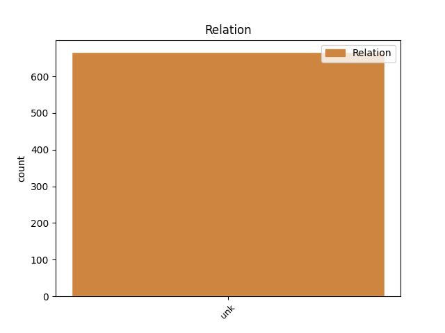
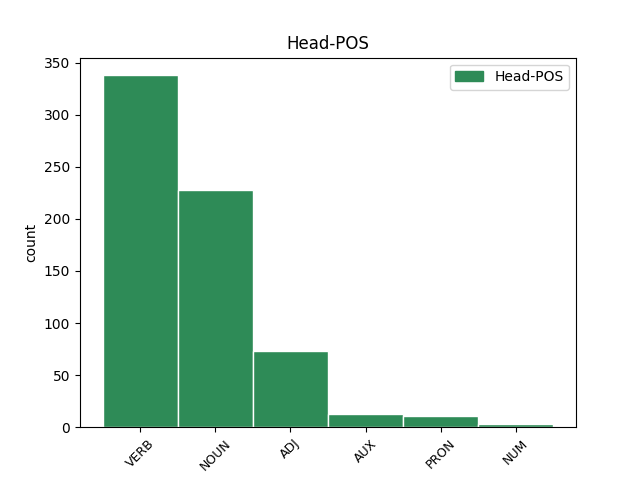
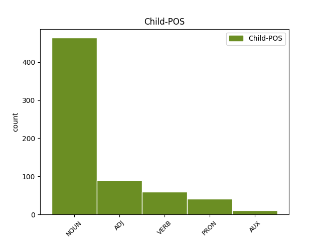

Distribution of features within this leaf



Agreement Rules sorted by frequency.
- When the dependent token is the unk(unk) of the head token, and the dependent token is NOUN.
1 ה _ _ _ _ 0 _ _ _
2 שינוי שינוי NOUN NOUN Gender=Masc|Number=Sing 3 unk _ _
3 חל חל VERB VERB Gender=Masc|HebBinyan=PAAL|Number=Sing|Person=3|Tense=Past|Voice=Act 0 _ _ _
4 עם _ _ _ _ 0 _ _ _
5 כניסה_ _ _ _ _ 0 _ _ _
6 _של_ _ _ _ _ 0 _ _ _
7 _הוא _ _ _ _ 0 _ _ _
8 של _ _ _ _ 0 _ _ _
9 בוסאני _ _ _ _ 0 _ _ _
10 ב _ _ _ _ 0 _ _ _
11 ה_ _ _ _ _ 0 _ _ _
12 דקה _ _ _ _ 0 _ _ _
13 ה _ _ _ _ 0 _ _ _
14 עשירית _ _ _ _ 0 _ _ _
15 . _ _ _ _ 0 _ _ _
1 חוטף חטף VERB VERB Gender=Masc|HebBinyan=PAAL|Number=Sing|Person=1,2,3|VerbForm=Part|Voice=Act 0 _ _ _
2 ו _ _ _ _ 0 _ _ _
3 קולע _ _ _ _ 0 _ _ _
4 ו _ _ _ _ 0 _ _ _
5 נע _ _ _ _ 0 _ _ _
6 ימינה _ _ _ _ 0 _ _ _
7 ו _ _ _ _ 0 _ _ _
8 שמאלה _ _ _ _ 0 _ _ _
9 , _ _ _ _ 0 _ _ _
10 הצידה _ _ _ _ 0 _ _ _
11 ו _ _ _ _ 0 _ _ _
12 אחורה _ _ _ _ 0 _ _ _
13 ו _ _ _ _ 0 _ _ _
14 בסיבוב _ _ _ _ 0 _ _ _
15 , _ _ _ _ 0 _ _ _
16 גמיש גמיש ADJ ADJ Gender=Masc|HebSource=ConvUncertainHead|Number=Sing 1 unk _ _
17 ו _ _ _ _ 0 _ _ _
18 זריז _ _ _ _ 0 _ _ _
19 ו _ _ _ _ 0 _ _ _
20 שאפתן _ _ _ _ 0 _ _ _
21 כמו _ _ _ _ 0 _ _ _
22 ב _ _ _ _ 0 _ _ _
23 ה_ _ _ _ _ 0 _ _ _
24 ימים _ _ _ _ 0 _ _ _
25 ה _ _ _ _ 0 _ _ _
26 בלתי _ _ _ _ 0 _ _ _
27 נשכחים _ _ _ _ 0 _ _ _
28 ה _ _ _ _ 0 _ _ _
29 הם _ _ _ _ 0 _ _ _
30 . _ _ _ _ 0 _ _ _
1 מרגיז _ _ _ _ 0 _ _ _
2 את_ _ _ _ _ 0 _ _ _
3 _אני _ _ _ _ 0 _ _ _
4 , _ _ _ _ 0 _ _ _
5 כאשר _ _ _ _ 0 _ _ _
6 אני _ _ _ _ 0 _ _ _
7 רואה _ VERB VERB Gender=Masc|HebBinyan=PAAL|Number=Sing|Person=1,2,3|VerbForm=Part|Voice=Act 0 _ _ _
8 את _ _ _ _ 0 _ _ _
9 ניר _ _ _ _ 0 _ _ _
10 ריכליס _ _ _ _ 0 _ _ _
11 עולה _ VERB VERB Gender=Masc|HebBinyan=PAAL|HebSource=ConvUncertainHead|Number=Sing|Person=1,2,3|VerbForm=Part|Voice=Act 7 unk _ _
12 ל _ _ _ _ 0 _ _ _
13 כמה _ _ _ _ 0 _ _ _
14 דקות _ _ _ _ 0 _ _ _
15 , _ _ _ _ 0 _ _ _
16 עושה _ _ _ _ 0 _ _ _
17 שגיאה _ _ _ _ 0 _ _ _
18 , _ _ _ _ 0 _ _ _
19 ו _ _ _ _ 0 _ _ _
20 מיד _ _ _ _ 0 _ _ _
21 יורד _ _ _ _ 0 _ _ _
22 ל _ _ _ _ 0 _ _ _
23 ה_ _ _ _ _ 0 _ _ _
24 ספסל _ _ _ _ 0 _ _ _
25 . _ _ _ _ 0 _ _ _
1 רבים רב VERB VERB Gender=Masc|HebBinyan=PAAL|Number=Plur|Person=1,2,3|VerbForm=Part|Voice=Act 0 _ _ _
2 מהם _ _ _ _ 0 _ _ _
3 _הם הוא PRON PRON Gender=Masc|HebSource=ConvUncertainHead|Number=Plur|Person=3|PronType=Prs 1 unk _ _
4 חשו _ _ _ _ 0 _ _ _
5 להתנדב _ _ _ _ 0 _ _ _
6 ב _ _ _ _ 0 _ _ _
7 שגרירויות _ _ _ _ 0 _ _ _
8 כוויית _ _ _ _ 0 _ _ _
9 ב _ _ _ _ 0 _ _ _
10 רחבי _ _ _ _ 0 _ _ _
11 ה _ _ _ _ 0 _ _ _
12 עולם _ _ _ _ 0 _ _ _
13 ו _ _ _ _ 0 _ _ _
14 שילמו _ _ _ _ 0 _ _ _
15 בעד _ _ _ _ 0 _ _ _
16 נסיעה_ _ _ _ _ 0 _ _ _
17 _של_ _ _ _ _ 0 _ _ _
18 _הם _ _ _ _ 0 _ _ _
19 ל _ _ _ _ 0 _ _ _
20 מחנות _ _ _ _ 0 _ _ _
21 ה _ _ _ _ 0 _ _ _
22 אימונים _ _ _ _ 0 _ _ _
23 של_ _ _ _ _ 0 _ _ _
24 _הם _ _ _ _ 0 _ _ _
25 . _ _ _ _ 0 _ _ _
1 ה _ _ _ _ 0 _ _ _
2 גשמים גשם NOUN NOUN Gender=Masc|Number=Plur 0 _ _ _
3 , _ _ _ _ 0 _ _ _
4 ש _ _ _ _ 0 _ _ _
5 היו היה AUX AUX Gender=Fem,Masc|Number=Plur|Person=3|Polarity=Pos|Tense=Past|VerbType=Cop 2 unk _ _
6 ב _ _ _ _ 0 _ _ _
7 כמויות _ _ _ _ 0 _ _ _
8 משמעותיות _ _ _ _ 0 _ _ _
9 בעיקר _ _ _ _ 0 _ _ _
10 ב _ _ _ _ 0 _ _ _
11 ה_ _ _ _ _ 0 _ _ _
12 צפון _ _ _ _ 0 _ _ _
13 , _ _ _ _ 0 _ _ _
14 הביאו _ _ _ _ 0 _ _ _
15 ל _ _ _ _ 0 _ _ _
16 צמצום _ _ _ _ 0 _ _ _
17 ב _ _ _ _ 0 _ _ _
18 היקף _ _ _ _ 0 _ _ _
19 ה _ _ _ _ 0 _ _ _
20 השקיה _ _ _ _ 0 _ _ _
21 . _ _ _ _ 0 _ _ _
Disagree Examples:
1 שר _ _ _ _ 0 _ _ _
2 ה _ _ _ _ 0 _ _ _
3 ביטחון _ _ _ _ 0 _ _ _
4 משה _ _ _ _ 0 _ _ _
5 ארנס _ _ _ _ 0 _ _ _
6 ערך _ _ _ _ 0 _ _ _
7 אתמול _ _ _ _ 0 _ _ _
8 ביקור _ _ _ _ 0 _ _ _
9 מפתיע _ _ _ _ 0 _ _ _
10 ב _ _ _ _ 0 _ _ _
11 רצועת _ _ _ _ 0 _ _ _
12 עזה _ _ _ _ 0 _ _ _
13 ו _ _ _ _ 0 _ _ _
14 שמע _ _ _ _ 0 _ _ _
15 דיווחים _ _ _ _ 0 _ _ _
16 על _ _ _ _ 0 _ _ _
17 ה _ _ _ _ 0 _ _ _
18 התפרעויות _ _ _ _ 0 _ _ _
19 שם _ _ _ _ 0 _ _ _
20 , _ _ _ _ 0 _ _ _
21 ה _ _ _ _ 0 _ _ _
22 נמשכות נמשך VERB VERB Gender=Fem|HebBinyan=NIFAL|Number=Plur|Person=1,2,3|VerbForm=Part|Voice=Mid 0 _ _ _
23 זה _ _ _ _ 0 _ _ _
24 ה _ _ _ _ 0 _ _ _
25 יום יום NOUN NOUN Gender=Masc|Number=Sing 22 unk _ _
26 ה _ _ _ _ 0 _ _ _
27 שני _ _ _ _ 0 _ _ _
28 ב _ _ _ _ 0 _ _ _
29 רציפות _ _ _ _ 0 _ _ _
30 . _ _ _ _ 0 _ _ _
1 לך _ _ _ _ 0 _ _ _
2 תוכיח _ _ _ _ 0 _ _ _
3 ש _ _ _ _ 0 _ _ _
4 יש _ _ _ _ 0 _ _ _
5 ב _ _ _ _ 0 _ _ _
6 ה_ _ _ _ _ 0 _ _ _
7 ארץ _ _ _ _ 0 _ _ _
8 ה _ _ _ _ 0 _ _ _
9 זו _ _ _ _ 0 _ _ _
10 הרבה _ _ _ _ 0 _ _ _
11 אנשים _ _ _ _ 0 _ _ _
12 ה _ _ _ _ 0 _ _ _
13 רחוקים רחוק ADJ ADJ Gender=Masc|Number=Plur 0 _ _ _
14 ת"ק _ _ _ _ 0 _ _ _
15 פרסה פרסה NOUN NOUN Gender=Fem|Number=Sing 13 unk _ _
16 מ _ _ _ _ 0 _ _ _
17 השקפות _ _ _ _ 0 _ _ _
18 ימניות _ _ _ _ 0 _ _ _
19 , _ _ _ _ 0 _ _ _
20 ו _ _ _ _ 0 _ _ _
21 ב _ _ _ _ 0 _ _ _
22 כל _ _ _ _ 0 _ _ _
23 זאת _ _ _ _ 0 _ _ _
24 סמלים _ _ _ _ 0 _ _ _
25 לאומיים _ _ _ _ 0 _ _ _
26 ( _ _ _ _ 0 _ _ _
27 לפחות _ _ _ _ 0 _ _ _
28 חלק_ _ _ _ _ 0 _ _ _
29 _של_ _ _ _ _ 0 _ _ _
30 _הם _ _ _ _ 0 _ _ _
31 ) _ _ _ _ 0 _ _ _
32 עדיין _ _ _ _ 0 _ _ _
33 מרגשים _ _ _ _ 0 _ _ _
34 את_ _ _ _ _ 0 _ _ _
35 _הם _ _ _ _ 0 _ _ _
36 . _ _ _ _ 0 _ _ _
1 יש _ _ _ _ 0 _ _ _
2 שוני _ _ _ _ 0 _ _ _
3 גדול _ _ _ _ 0 _ _ _
4 ב _ _ _ _ 0 _ _ _
5 תוככי _ _ _ _ 0 _ _ _
6 כל _ _ _ _ 0 _ _ _
7 אחד אחד NUM NUM Gender=Masc|Number=Sing 0 _ _ _
8 מן _ _ _ _ 0 _ _ _
9 ה _ _ _ _ 0 _ _ _
10 גושים גוש NOUN NOUN Gender=Masc|HebSource=ConvUncertainHead|Number=Plur 7 unk _ _
11 פנימה _ _ _ _ 0 _ _ _
12 , _ _ _ _ 0 _ _ _
13 אך _ _ _ _ 0 _ _ _
14 ה _ _ _ _ 0 _ _ _
15 פוליטיקה _ _ _ _ 0 _ _ _
16 נחלקת _ _ _ _ 0 _ _ _
17 ב _ _ _ _ 0 _ _ _
18 צורה _ _ _ _ 0 _ _ _
19 שרירותית _ _ _ _ 0 _ _ _
20 ב _ _ _ _ 0 _ _ _
21 ה_ _ _ _ _ 0 _ _ _
22 אמצע _ _ _ _ 0 _ _ _
23 , _ _ _ _ 0 _ _ _
24 בין _ _ _ _ 0 _ _ _
25 אלה _ _ _ _ 0 _ _ _
26 ה _ _ _ _ 0 _ _ _
27 נכונים _ _ _ _ 0 _ _ _
28 או _ _ _ _ 0 _ _ _
29 נאלצים _ _ _ _ 0 _ _ _
30 לוותר _ _ _ _ 0 _ _ _
31 ל _ _ _ _ 0 _ _ _
32 ה_ _ _ _ _ 0 _ _ _
33 פלשתינאים _ _ _ _ 0 _ _ _
34 לבין _ _ _ _ 0 _ _ _
35 מי _ _ _ _ 0 _ _ _
36 ש _ _ _ _ 0 _ _ _
37 עדיין _ _ _ _ 0 _ _ _
38 מחפשים _ _ _ _ 0 _ _ _
39 דרכים _ _ _ _ 0 _ _ _
40 חלופיות _ _ _ _ 0 _ _ _
41 . _ _ _ _ 0 _ _ _
1 ה _ _ _ _ 0 _ _ _
2 פוליטיקאים _ _ _ _ 0 _ _ _
3 מוליכים הוליך VERB VERB Gender=Masc|HebBinyan=HIFIL|Number=Plur|Person=1,2,3|VerbForm=Part|Voice=Act 0 _ _ _
4 שולל שולל NOUN NOUN Gender=Masc|Number=Sing 3 unk _ _
5 את _ _ _ _ 0 _ _ _
6 עצמם _ _ _ _ 0 _ _ _
7 ו _ _ _ _ 0 _ _ _
8 את _ _ _ _ 0 _ _ _
9 כל _ _ _ _ 0 _ _ _
10 ה _ _ _ _ 0 _ _ _
11 ציבור _ _ _ _ 0 _ _ _
12 . _ _ _ _ 0 _ _ _
1 אחרי _ _ _ _ 0 _ _ _
2 כל _ _ _ _ 0 _ _ _
3 תקרית _ _ _ _ 0 _ _ _
4 של _ _ _ _ 0 _ _ _
5 פגיעה _ _ _ _ 0 _ _ _
6 ב _ _ _ _ 0 _ _ _
7 יהודים _ _ _ _ 0 _ _ _
8 או _ _ _ _ 0 _ _ _
9 ב _ _ _ _ 0 _ _ _
10 ערבים _ _ _ _ 0 _ _ _
11 , _ _ _ _ 0 _ _ _
12 כאשר _ _ _ _ 0 _ _ _
13 הכל _ _ _ _ 0 _ _ _
14 חוזר _ _ _ _ 0 _ _ _
15 ל _ _ _ _ 0 _ _ _
16 נקודת _ _ _ _ 0 _ _ _
17 ה _ _ _ _ 0 _ _ _
18 התחלה _ _ _ _ 0 _ _ _
19 ו _ _ _ _ 0 _ _ _
20 כולם _ _ _ _ 0 _ _ _
21 מאבדים _ _ _ _ 0 _ _ _
22 תקווה _ _ _ _ 0 _ _ _
23 או _ _ _ _ 0 _ _ _
24 שולפים _ _ _ _ 0 _ _ _
25 שוב _ _ _ _ 0 _ _ _
26 את _ _ _ _ 0 _ _ _
27 ה _ _ _ _ 0 _ _ _
28 פתרונות _ _ _ _ 0 _ _ _
29 ש _ _ _ _ 0 _ _ _
30 אינם _ _ _ _ 0 _ _ _
31 ניתנים _ _ _ _ 0 _ _ _
32 ל _ _ _ _ 0 _ _ _
33 יישום _ _ _ _ 0 _ _ _
34 ו _ _ _ _ 0 _ _ _
35 אינם _ _ _ _ 0 _ _ _
36 יכולים _ _ _ _ 0 _ _ _
37 לפתור _ _ _ _ 0 _ _ _
38 , _ _ _ _ 0 _ _ _
39 קולק _ _ _ _ 0 _ _ _
40 חוזר _ _ _ _ 0 _ _ _
41 ו _ _ _ _ 0 _ _ _
42 אומר _ _ _ _ 0 _ _ _
43 ב _ _ _ _ 0 _ _ _
44 מעין _ _ _ _ 0 _ _ _
45 טון _ _ _ _ 0 _ _ _
46 לא _ _ _ _ 0 _ _ _
47 סבלני _ _ _ _ 0 _ _ _
48 של _ _ _ _ 0 _ _ _
49 " _ _ _ _ 0 _ _ _
50 אמרתי _ _ _ _ 0 _ _ _
51 ל_ _ _ _ _ 0 _ _ _
52 _אתם _ _ _ _ 0 _ _ _
53 כבר _ _ _ _ 0 _ _ _
54 פעם _ _ _ _ 0 _ _ _
55 " _ _ _ _ 0 _ _ _
56 , _ _ _ _ 0 _ _ _
57 ש _ _ _ _ 0 _ _ _
58 ה _ _ _ _ 0 _ _ _
59 איבה _ _ _ _ 0 _ _ _
60 ה _ _ _ _ 0 _ _ _
61 זו _ _ _ _ 0 _ _ _
62 תימשך נמשך VERB VERB Gender=Fem|HebBinyan=NIFAL|Number=Sing|Person=3|Tense=Fut|Voice=Mid 0 _ _ _
63 עוד _ _ _ _ 0 _ _ _
64 הרבה _ _ _ _ 0 _ _ _
65 שנים שנה NOUN NOUN Gender=Fem|Number=Plur 62 unk _ SpaceAfter=No
66 . _ _ _ _ 0 _ _ _